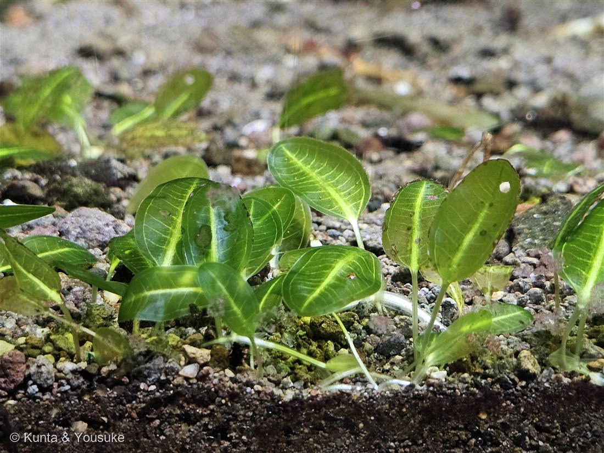

地図を読み込んでいるよ…
🔍 写真も地図も、押しているあいだ拡大して見られるよ（スマホは指を置いてすこし待ってね）。
🌍 の地図＝この子がもともと自生している場所を緑に。中央〜南アメリカ。エキノドルス属は中南米の水辺に広く分布し、水草として多くの品種が育てられている（この株の品種は未特定）。
⭐エキノドルス属は中央〜南アメリカの水辺に広く分布する水草。⚠この緑は「属ぜんたい」のだいたいの範囲だよ——この株は品種が未特定なので、正確なふるさとの一点は決められない（品種は人が改良したものも多い）。⚠日本は塗っていない——これは水槽で育てている水草で、日本はふるさとじゃないよ。⭐108オオカナダモ（南米・トチカガミ科）と同じオモダカ目。水草は、南米生まれが多いね。
⚠ 地図は国（日本と中国だけ県・省）までしか塗れないから、ほんとうの分布より広く見えていることがあるよ。地図はだいたいの場所。正確なところは、上の文を見てね。
エキノドルスの仲間
Echinodorus sp.
別名 · アマゾンソード（通称）／ 原産 · 中南米の水辺／ 育つ場所 · 水槽（沈水〜抽水）／ ⭐品種はとても多い（この株は品種未特定）
オモダカ科 · Alismataceae（エキノドルス属 Echinodorus）── 図鑑で初めてのオモダカ科
燻太さんの見立て「団扇のような変わった葉っぱ。葉の縁を一周するように葉脈が走っているのが特徴的だね？」──大当たり。その「縁を一周する葉脈」こそ、エキノドルスの目印だよ。
名前と学名の由来 ── 「とげのある実」の水草
- ⭐属名 Echinodorus（エキノドルス）は、ギリシャ語 echinos（ハリネズミ・とげ）＋ doros（皮袋）から。──実（果実）が、とげのある球のように集まることにちなむといわれる。水の中の葉からは想像しにくいけど、花のあとには“とげの実”をつけるんだ。
- 通称「アマゾンソード」は、大きく育つ品種の葉が剣（ソード）のように見え、アマゾン（南米）の水草だから。水槽（アクアリウム）では、水草の“主役（センタープランツ）”としてとても人気がある。
- 和名は「エキノドルスの仲間」にしてある。──理由は下の「同定について」で正直に書くね。
この植物のこと
- オモダカ科エキノドルス属の水草（沈水〜抽水のロゼット植物）。図鑑で初めてのオモダカ科だよ。──108オオカナダモ（トチカガミ科）と同じオモダカ目（Alismatales）。水草つながりで、また新しい科に会えたね。
- ⭐⭐燻太さんが気づいた「葉の縁を一周するように走る葉脈」が、いちばんの目印。中央の太い脈から左右の脈が弧を描いてのび、葉のふちに沿って先で合わさる（弧状脈）。さらにふちのすぐ内側を、一周する細い脈がある。「メロンの皮のような葉脈」ともいわれる、エキノドルスらしい葉。
- 葉は団扇（うちわ）形の楕円で、透きとおった緑。白っぽい葉柄で砂利から立ち上がる。写真は、まだ小さな水中葉。
- ⭐水上葉と水中葉で、姿がかなり変わる。水中では透明でやわらかく、水の上に出ると厚くしっかりした葉になる（今は水中葉のすがた）。
- 原産は中南米。多くの品種が作られていて、水槽の景色をつくる、いちばん身近な水草のひとつ。
同定について ── 属は自信あり、種はまだ保留
- ⭐⭐属（エキノドルス）は確定的。決め手は3つ：①弧状脈＋縁を一周する脈（燻太さんの観察）②団扇形の楕円の水中葉（サジタリアやオモダカの幼葉は細い線形なので落とせる）③オモダカ科らしい、砂利から立つロゼット。
- ⚠でも、種・品種は保留にしておく。エキノドルスは品種がとても多く、しかも幼い水中葉は、どの品種も似ていて見分けにくい。ここで無理に品種名をつけると、知ったかぶりになっちゃう。
- 📌宿題：この子が育って、大きな成長葉や水上葉が出たり、花茎（とげの実）が上がったりしたら、そのとき品種を詰めよう。──「わからないところは、わからないと書く」（019コケ・020フィロデンドロンと同じ、正直な席の取り方）。
参考：東京アクアガーデン「エキノドルス」（オモダカ科・南米原産のロゼット水草・水上葉と水中葉で姿が変わる・品種が多い）／Wikipedia「エキノドルス」（Echinodorus・Alismataceae・中南米・弧状の葉脈）